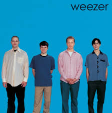

Top Hits (If You Care)
- Buddy Holly — "Timeless, but why are you still here?"
- Say It Ain't So — "You're still reading this?"
- Island in the Sun — "At least it's a vibe."
- Hash Pipe — "Unanswered questions."
- Pork and Beans — "Not as random as this page."
Rivers-Approved Wisdom (Maybe)
"Contemplating the purpose of a purpose-free page."
